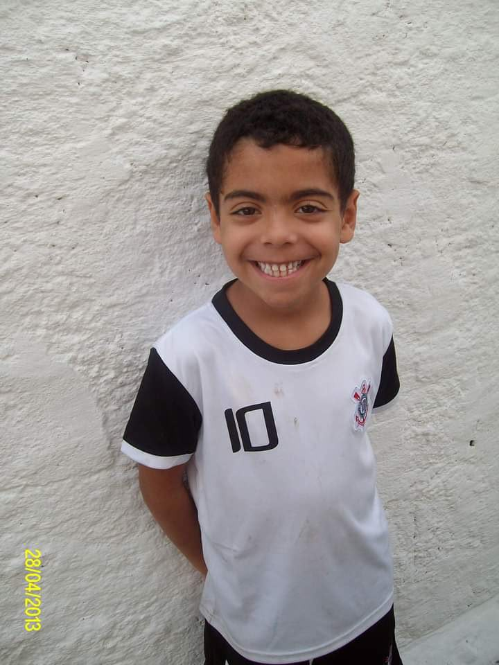
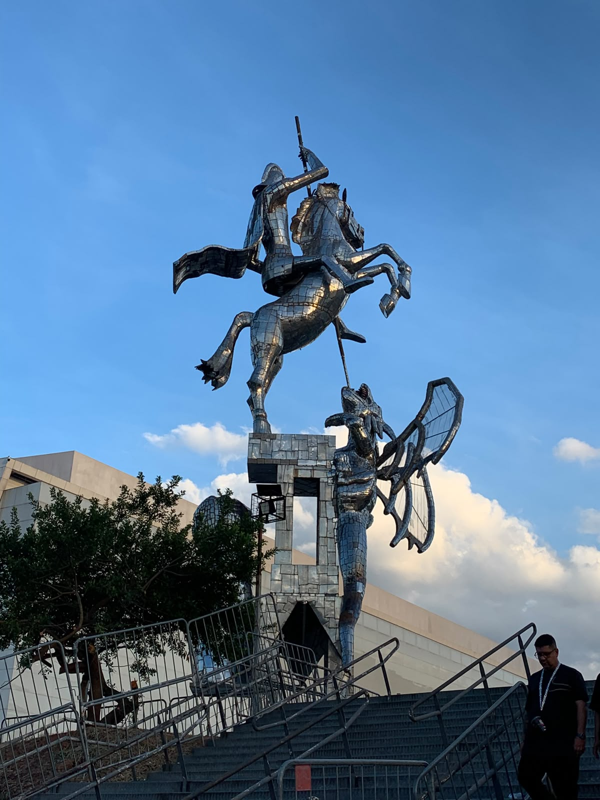
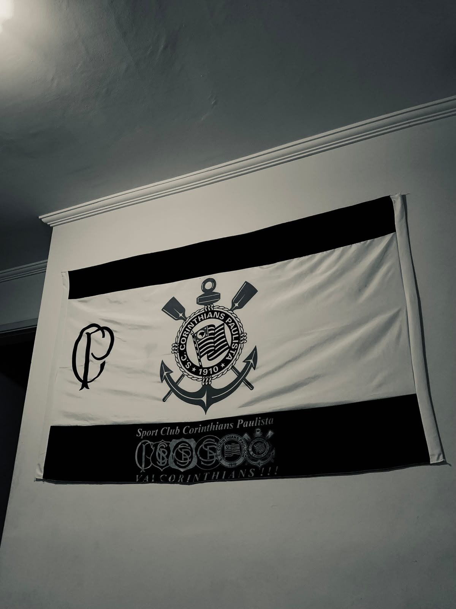

ALMA DA FIEL
Uma história que vive em cada torcedor
Das origens populares às conquistas eternas. Conheça a história, os ídolos e a cultura de um clube que nunca foi apenas futebol.
ALMA DA FIEL / NOSSA ESSÊNCIA
Mais do que um clube. Uma história que vive em cada torcedor.
Nascido em 1910, no Bom Retiro, o Corinthians carrega a força de suas origens populares. Uma história de luta, pertencimento e conquistas que atravessa gerações.
O Alma da Fiel nasceu da paixão pelo Corinthians e da vontade de preservar e compartilhar a história de um dos clubes mais marcantes do futebol brasileiro.
Uma paixão que atravessa gerações.
O Corinthians construiu uma trajetória marcada por conquistas, ídolos, superação e uma torcida que faz parte da identidade do clube. Cada época deixou momentos que merecem ser lembrados e conhecidos pelas novas gerações.


Por trás do Alma da Fiel.
Um projeto que nasceu da paixão. O Alma da Fiel é um projeto acadêmico desenvolvido por um estudante de Análise e Desenvolvimento de Sistemas da SPTech. A proposta une uma paixão pessoal pelo Corinthians à oportunidade de criar uma experiência digital que valorize sua história..
